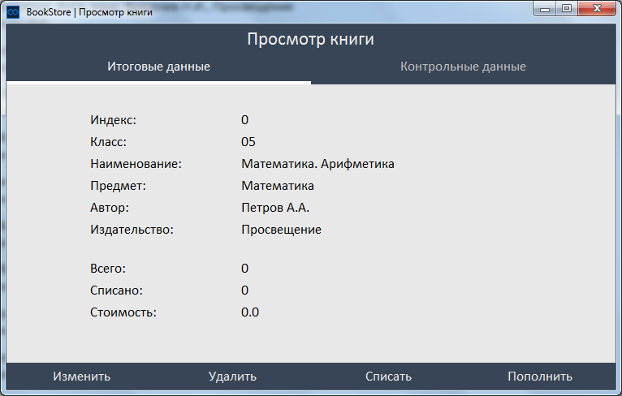

После создания книги можно начинать редактировать ее контрольные данные.
Начнем просмотра книги. Для того, чтобы открыть основное окно просмотра и работы с
книгой, необходимо выбрать из центрального списка нужную Вам книгу одним щелчком
мыши и нажать на кнопочку инструмента «Просмотр» (обозначена пиктограммой «Глаз»),
после чего Вам откроется следующее окно.

В нем мы видим все те данные, которые мы вводили при создании данной книги, кроме
одного параметра – индекс. Это уникальный номер каждой книги, по которому BookStore
может обращаться к любой книге в базе. Он создается самим BookStore и по большей
части нужен только самой системе.
Как мы видим, изначально в параметрах «Всего», «Списано» и «Стоимость» у нас стоят
нули, так как мы еще не вносили контрольных данных о пополнениях и списаниях
экземпляров просматриваемой нами книги.
С помощью кнопок нижней панели просмотра книги мы можем вносить эти самые
контрольные данные. Чтобы записать получение экземпляров книги в контрольные
данные, необходимо нажать «Пополнить»; чтобы списать экземпляры необходимо
нажать «Списать».
Если Вы нажали «Пополнить», то Вам откроется новое окно. Введите в нужные поля ввода
данные о годе поступления экземпляров, количестве поступивших экземпляров и цене
одного экземпляра в этом поступлении.
После того как Вы ввели нужные данные, нажмите «Пополнить». Сразу после этого
BookStore переведет Вас на другую страницу просмотра книги, где Вы сможете увидеть
список всех поступлений по данной книге. В этом списке и содержатся контрольные
данные просматриваемой книги.
Чтобы переходить между страницами данных книги, используйте две верхние
вкладки. Чтобы перейти из контрольных данных в главные (итоговые) нажмите на
вкладку «Итоговые данные». И наоборот, чтобы перейти из главных (итоговых) данных в
контрольные, нажмите вкладку «Контрольные данные».
Чтобы списать экземпляры книги, нажмите на кнопку «Списать». Вам выпадет похожее на
окно пополнения другое окно, в котором Вы сможете указать год списания и количество
списанных в этом году экземпляров.
После того как Вы ввели нужные данные, нажмите кнопку «Списать». BookStore также
автоматически переведет Вас на страницу с контрольными данными.
Также BookStore умеет хранить сразу несколько контрольных строк, как о пополнении, так
и о списании, даже если они одного года. Это связано с тем, что:
- В одном году может быть два или более поступлений экземпляров одной книги
- Поступления одного и того же года могут иметь разные цены одного экземпляра.
В связи с этими факторами в списке контрольных может находиться несколько
поступлений или списаний одного года. Вот пример:
В данном списке у нас записано два поступления одного года, и у этих поступлений
разные цены одного экземпляра.
Если Вы считаете какую-то строку контрольных данных ошибочной, Вы всегда можете ее
удалить. Для этого Вам достаточно щелкнуть по ошибочной строке в списке контрольных
данных и нажать кнопку «Удалить», которая находится ниже списка.
Теперь посмотрим на страницу с главными (итоговыми) данными. BookStore сам
обрабатывает нами сохраненные контрольные данные и считает, сколько сейчас
экземпляров данной книги, сколько было всего списано экземпляров книги и какова
общая стоимость всех экземпляров данной книги – всю эту информацию он выводит в
трех последних полях просмотра главных (итоговых) данных.
Также Вы можете изменять главные данные книги через окно просмотра. Напомню, в
одном из прошлых уроков (сюда ссылку на страницу про изменение/удаление книги)
было описано, как редактировать и изменять главные данные книги. Чтобы изменить
или удалить просматриваемую Вами книгу, достаточно нажать на кнопки «Изменить»
или «Удалить», в зависимости от того, что Вам необходимо. После нажатия таких кнопок
Вам будут открываться те же окна, что и при изменении или удалении книг с помощью тех
инструментов, которые были описаны
ранее.